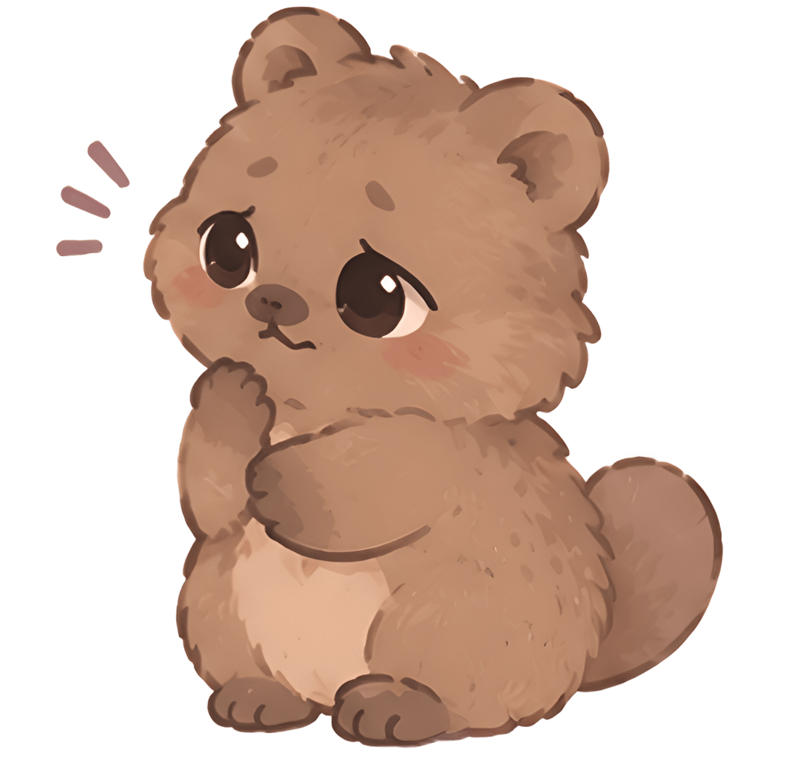

Социальные трудности
Иногда жизнь в обществе может быть сложной. Здесь ты найдёшь информацию о распространённых проблемах и способах их решения.
Мы рядом ♡

Что делать, если тебе тяжело?
Ты можешь написать чат-боту, зайти в наше сообщество или позвонить на линию доверия 150.
Перейти в поддержку →👥 Общение и отношения
Отношения с другими людьми — важная часть жизни. Но иногда они приносят больше боли, чем радости. Разберёмся, с чем ты можешь столкнуться:
Буллинг
Травля, насмешки и исключение из компании могут сильно ранить. Узнай, как себя защитить и куда обратиться.
Конфликты
Ссоры — часть жизни. Важно знать, как решать их спокойно и честно.
Давление
Когда от тебя требуют быть «как все» или делать то, чего ты не хочешь.
Нарушение личных границ
Важно уметь говорить «нет» и защищать своё пространство.
Токсичные отношения
Как распознать нездоровые отношения и не потерять себя.
Насилие и домогательства
Если с тобой так поступили — это не твоя вина. Узнай, где найти помощь.
Расставание
Когда отношения заканчиваются, бывает очень больно. Как пережить это.
🏠 Семья
Семья может быть опорой, но иногда дома бывает трудно. Ты не один(а) с этим:
Конфликты
Ссоры с родителями, братьями или сёстрами. Как договориться.
Непонимание
Когда кажется, что дома тебя не слышат. Как начать разговор.
Семейные изменения
Развод, переезд, новый член семьи — как пережить перемены.
Гиперконтроль
Когда родители контролируют каждый шаг. Как найти баланс.
Нарушение личных границ
Твоё личное пространство важно — даже дома.
🎓 Школа и учёба
Школа — это не только уроки, но и люди, ожидания и стресс. Вот с чем часто сталкиваются:
Буллинг
Травля в классе или школе. Как защитить себя и кому рассказать.
Кибербуллинг
Оскорбления и травля в интернете и чатах. Что с этим делать.
Конфликты
Ссоры с одноклассниками или учителями. Как их решать.
Отсутствие мотивации
Когда ничего не хочется учить. Почему так бывает и что помогает.
Трудности адаптации
Новая школа или класс. Как привыкнуть и найти своих.
Давление
Оценки, экзамены, ожидания. Как не сгореть.
🌍 Общество
Иногда трудно не из-за конкретного человека, а из-за того, как устроено общество вокруг:
Дискриминация
Когда к тебе относятся хуже из-за того, кто ты есть.
Ожидания
Каким «надо» быть. Как остаться собой.
Социальная изоляция
Когда чувствуешь себя одиноко и не на своём месте.
Неравенство
Когда у людей разные возможности. Что можно сделать.
Предвзятое отношение
Стереотипы и ярлыки. Как с ними справляться.
Осуждение
Когда тебя критикуют и обсуждают. Как сохранить себя.
Также может быть сложно…
Одиночество, грусть, чувство, что тебя не понимают? Загляни в раздел про эмоциональное состояние.
Узнать больше →
🔗 Полезные ресурсы
Чат сообщества ↗ Чат-бот помощник ↗ Линия доверия 150 (звонок) ↗ Линия 150 в WhatsApp ↗Помни:
просить о помощи —
это нормально ♡